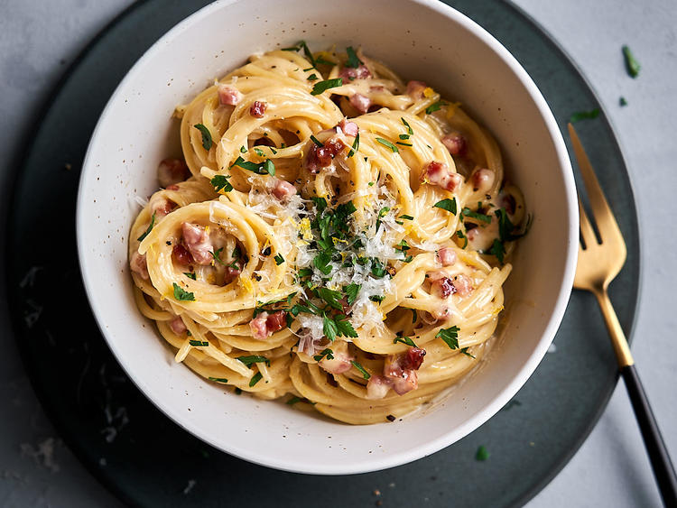

Carbonara

Beschreibung
Carbonara ist eine alte italienisches Pasta Gericht.
Cremig mit Sahne ist sie in ein fester Bestandteil eines italienischer Küche.
Für jedes Date geeignet.
Mit diesen Rezept wird jede italienische Großmutter schwärmen und sie zum Lieblingsschwiegersohn erklären!
Zutaten
Für 4 Personen
- Salz, grober Pfeffer
- 100 g Pecorino (Stück)
- 100 g Pancetta
- 2 Knoblauchzehen
- 500 g Spaghetti
- 2 EL Olivenöl
- 1 Ei (Gr.M)
- + zusätzlich 3 Eigelb (Gr. M)
- 3 l Salzwasser (1Tl Salz pro Liter) aufkochen.
Käse fein reiben und Pancetta in kleine Würfel schneiden.
Knoblauch schälen und fein hacken.
-
Nudeln in kochenden Salzwasser geben und nach Packungsanweisungen garen.
Öl in einer großen beschichteten Pfanne erhitzen. Pancetta darin anbraten,
Knoblauch kurz mitbraten. Nudel abgießen, dabei ca. 4 EL Kochwasser auffangen.
Nudeln in die Pfanne zum Pancetta geben und alles gut mischen.
-
Ei, Eigelb, Kochwasser und die Hälfte der Käse verquirlen, mit Pfeffer würzen.
Nudelmix in eine vorgewärmte Schüssel umfüllen, Ei-Käse-Masse zugießen und schnell mit den Nudeln mischen.
Mit Rest Käse und Pfeffer bestreuen.
HOME